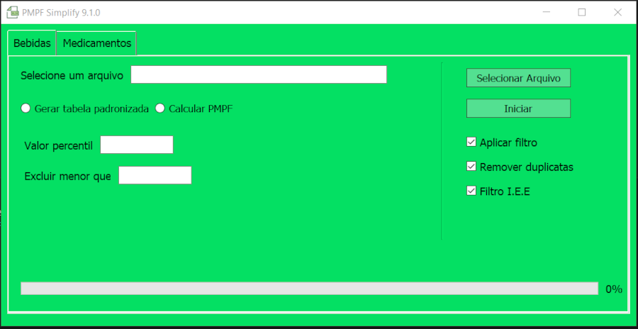
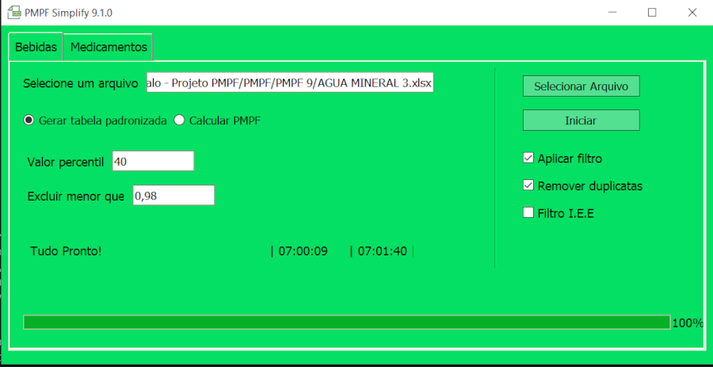

Descrição do Projeto e Funcionalidades
Este projeto tem como objetivo principal a padronização e análise de dados de produtos presentes em notas fiscais eletrônicas (NFes). Ele é dividido em duas etapas principais: a padronização de dados e a identificação de erros, seguida pela análise estatística e cálculo de variações. As funcionalidades do projeto incluem:

- Carregamento e validação de dados: Leitura de arquivos Excel contendo dados de produtos e tabela de erros.
- Padronização de dados: Aplicação de intervalos de aceitação para valores unitários e filtragem de valores discrepantes.
- Análise estatística: Cálculo de variâncias, desvios padrão e outras métricas estatísticas para cada grupo de produtos.
- Geração de relatórios: Criação de relatórios detalhados com análise de erros, variações de preços e distribuição de vendas por setor.
- Salvamento de resultados: Armazenamento dos dados padronizados e analisados em arquivos Excel para posterior revisão e utilização.
Detalhamento das Etapas
Primeira Etapa: Padronização de Dados e Identificação de Erros
- Carregamento de Dados: Carregamento de arquivos Excel contendo dados padronizados e tabela de erros. Verificação e carregamento de arquivo de configuração
Gtin.xlsx. - Inicialização de Estruturas: Criação de DataFrames para armazenar resultados, dados de desvio padrão, fornecedores e resultados finais. Inicialização de dicionários para armazenar variações e intervalos de aceitação.
- Cálculo de Intervalos de Aceitação: Cálculo de limites inferior e superior de aceitação para valores unitários de produtos agrupados por código GTIN.
- Filtragem de Dados: Filtragem de dados com base nos intervalos de aceitação. Valores dentro dos intervalos são considerados corretos, enquanto valores fora são classificados como erros.
- Análise Estatística: Cálculo de variâncias e desvios padrão para cada grupo de produtos. Cálculo do valor total das notas fiscais para posterior análise percentual.
- Compilação dos Resultados: Cálculo de várias métricas para cada produto e armazenamento em tabelas de resultados e fornecedores.
- Salvamento dos Resultados: Salvamento de DataFrames resultantes em um arquivo Excel, organizados em várias abas, incluindo dados padronizados, tabela de erros, dados tratados, relatório e análise de erros por fornecedores.

Segunda Etapa: Análise Estatística e Cálculo de Variações
- Preparação dos Dados: Carregamento dos dados previamente padronizados e filtrados. Inicialização de estruturas de dados para armazenar resultados da análise estatística.
- Cálculo de Variações: Agrupamento de dados por código GTIN e cálculo de soma de unidades comerciais e valor total do produto. Cálculo de variâncias e desvios padrão para cada grupo de produtos.
- Análise de Desvios Padrão: Identificação de produtos com variações fora dos intervalos de aceitação. Remoção de valores discrepantes e recalculação de métricas.
- Compilação de Relatórios: Criação de relatórios detalhados contendo análise de quantidade de erros, variações de preços e distribuições de vendas por setor. Preenchimento de tabelas com dados consolidados e estatísticas calculadas.
- Salvamento Final dos Resultados: Salvamento de todos os resultados e análises em um arquivo Excel, organizados em abas específicas para fácil acesso e revisão.
Tecnologias Utilizadas
- Python: Linguagem principal de programação utilizada para todo o desenvolvimento do projeto.
- Pandas: Biblioteca essencial para manipulação e análise de dados, usada para operações com DataFrames.
- Openpyxl: Biblioteca usada para leitura e escrita de arquivos Excel.
- NumPy: Biblioteca usada para cálculos numéricos e operações matemáticas.
- PyQt5: Biblioteca usada para criar a interface gráfica do usuário (GUI) que facilita a interação com o sistema.
- Os: Módulo usado para operações relacionadas ao sistema operacional, como verificação da existência de arquivos.
- Bibliotecas de estatística: Ferramentas para cálculos estatísticos como variância e desvio padrão.